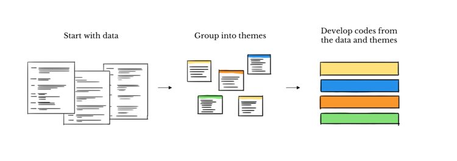
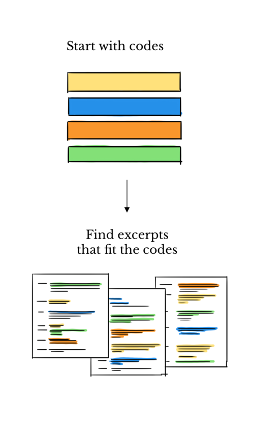

Analyzing Data
The Role of Contextuality
Qualitative data can be explored and re-analyzed to uncover hidden meanings and deeply unfold historical, social and cultural contexts and their entanglement with human subjects’ attitudes, behaviors and opinions. An important contextual issue regarding qualitative data concerns the ‘traces’ left by different perspectives on the material. Texts, whether from interviews, social media, or embedded in an artifact, are not just produced under certain material conditions embedded within socio-cultural contexts, but they are also produced to do something and becomes part of the context to be understood.
A Few Words about Secondary Analysis
Archived qualitative data offers opportunities for reanalysis, reinterpretation, and comparison with both existing and newly collected data sources. While many steps in secondary analysis parallel those of primary data analysis—such as data processing, analysis, and quality control—unique challenges arise, particularly in aligning the archived data with the specific objectives of the new study and assessing the data’s value in that context.
The success of secondary analysis is also heavily dependent on the quality and comprehensiveness of the accompanying documentation, which must provide detailed context about the original data collection, including the methodology, sampling, and any potential biases. Without this, the data may be misinterpreted, leading to inaccurate conclusions or limiting its applicability to new research questions. During the hands on component of this course, we will reuse pre-existing data and assess the associated documentation provided. Later, we will also explore recommendations on what type of metadata and documentation should be preserved and archive along with the data.
Understanding Qualitative Data Analysis Methods
Picture this: a treasure trove of data brimming with stories, emotions, and insights waiting to be uncovered. That’s the realm of qualitative data analysis – a journey where we navigate through the complexities of human attitudes, behaviors, and perceptions to unearth the gems that lie within.
Qualitative analysis is about finding patterns, unfold both explicit and implicit attitudes, behaviors, and beliefs, understanding meanings, and making sense of findings in relation to the research questions at hand.
Researchers use various methods, such as thematic analysis, content analysis, comparative analysis, and discourse analysis, to unearth and understand the complexities of human experiences, attitudes, behaviors, and perceptions captured in qualitative data. The goal is to generate rich and nuanced understandings of phenomena rather than producing numerical summaries or generalizable findings. These methods have been used to inform theory development, policy, and practice across disciplines and research domains and applied to various types of data sources, including written documents, social media posts, news articles, advertisements, photographs, videos, and interviews.
Thematic analysis: perhaps the most common method for qualitative data analysis, it allows researchers to spot overarching topics and main themes in the data that uncover recurring ideas, topics, or concepts.
Content analysis: digs deeper into themes to see how often they come up. It’s like zooming in to see the details. Content analysis involves systematically analyzing and interpreting the content of textual, visual, or audio materials to uncover patterns, trends, or meanings. It focuses on the specific elements within the content, such as words, phrases, images, or themes, rather than the broader themes or concepts.
Comparative analysis: delves into the intricate web of causal relationships between events and outcomes across diverse cases. By scrutinizing the nuances and variations it focuses on causal relationships between events and outcomes in different cases.
Discourse analysis: helps us understand how language reflects different ideas and cultures. Focuses on spoken or written conversational language.
Sentiment analysis: a branch of discourse of content analysis particularly interested in determining the emotional tone of the message or discourse (speech or written) is positive, negative, or neutral, or even exploring a broader spectrum of sentiments. It can be also heavily computational and quantitative-oriented, depending on the corpus of interest.
Thematic Analysis
For our practical exercises we will focuses on the most common approach; thematic analysis.

So, here is a recommended workflow we suggest you follow for this method:

Whether you’re new to research or a pro, qualitative analysis is an active process of reflexivity in which your subjective experience and pre-knowledge about the phenomenon of interest inform your process of making sense of the data and finding patterns and relationships. It is is all about close familiarization with the data, categorizing, discovering, reviewing and iterating until you find meaningful insights to inform your research questions, before you can drawn conclusions and articulated your findings.
Data can be arranged and coded following a deductive (top-down) approach, where researchers apply pre-existing theoretical frameworks or concepts to the data, more inductively (bottom-up), where insights, themes emerge directly from the data without prior assumptions, or even use a combination of both as they engage with and learn more details from the data.
(FIXME: ADD QUIZ & RECREATE IMAGES)


Source: https://delvetool.com/blog/deductiveinductive

Source: https://www.nngroup.com/articles/thematic-analysis
The top-down approach begins with a specific theoretical framework or research question. Data collection and analysis are guided by preconceived hypotheses, focusing on confirming or refuting these hypotheses. While it provides more direction to the research process, it may limit alternative perspectives or emergent themes not accounted for in the initial framework.In contrast, the bottom-up approach is exploratory and highly flexible as they are no predetermined categories or hypothesis, it has its basis on grounded theory, meaning that themes emerge directly from the data through open coding and analysis, allowing a wide range of topics and potential unexpected insights to be extracted from the data.
How many interviews are enough? Determining how many qualitative interviews are sufficient is a complex question, often yielding nuanced answers.
Data saturation is frequently cited as a measure of quality in qualitative research and used to justify purposive small samples, being primarily reliant on the point at which little new information is obtained, known as thematic saturation. In theory, thematic saturation occurs when interviews or observations start lacking variability to only reveal recurring themes, indicating that further data collection is unlikely to yield new insights. When researchers observe a plateau in these findings, it often signals that they may have reached an adequate sample size.
However, assessing saturation is not straightforward and much left to interpretation; as it involves subjective judgments about rigor, precision, and confidence. Often times, researchers may claim to have achieved saturation to meet certain criteria without adequately explaining what it entails in their specific context or how they reached that conclusion.
This lack of justification can undermine the transparency and credibility of qualitative studies. The notion of data saturation is often insufficiently examined and can be problematic and contradictory when applied broadly to qualitative research. It might be more appropriate to reserve the concept of data saturation for grounded theory, where there is a clear framework for its application.
While there is no consensus on minimal sample sizes for qualitative research. There is a general recommendation of 6–30 interviews for most qualitative research.
Now that we’ve gained some knowledge about coding, let’s explore how we can put these concepts into practice. In pairs, access the worksheet (add link) and follow the instructions.
https://docs.google.com/document/d/1Kxjx_Wp0PQ29e3Xhs1GZXTW2K3Da4LxnVd8zq1N2afY/edit
Exercise Sheet (add link) - publish on Zenodo
We will get more into this in later episodes where we will further explore different strategies to perform coding assisted by a QDA open and free software.
Recommended/Cited Sources:
Guest, G., Namey, E., & Chen, M. (2020). A simple method to assess and report thematic saturation in qualitative research. PloS one, 15(5), e0232076. https://doi.org/10.1371/journal.pone.0232076
van Rijnsoever F. J. (2017). (I Can’t Get No) Saturation: A simulation and guidelines for sample sizes in qualitative research. PloS one, 12(7), e0181689. https://doi.org/10.1371/journal.pone.0181689